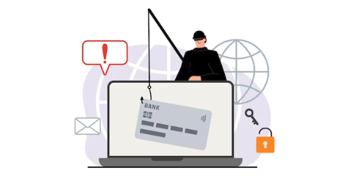
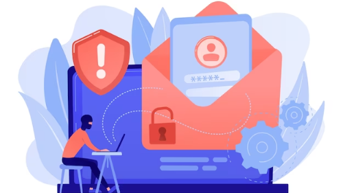

The Role Of Technology In Preventing Phishing Attacks
Phishing attacks have become a widespread issue in today's digital age. The rise of technology has allowed attackers to become more sophisticated in their attempts to steal sensitive information from individuals and businesses. These attacks often involve fraudulent emails or websites designed to look like legitimate sources, tricking the victim into sharing personal information such as login credentials or financial information. The consequences of falling victim to a phishing attack can be severe, from identity theft to financial loss.
However, technology can play a vital role in preventing these attacks. Various tools and techniques have been developed to combat phishing, including email filters, anti-phishing software, and multi-factor authentication. These tools work by identifying and blocking suspicious emails or websites before they reach the intended target.
As technology continues to evolve, so do the tactics used by attackers. It's essential to stay up to date with the latest trends and threats and implement the most effective prevention measures.

Email Filters And Authentication At An Advanced Level:
- Deceptive emails that appear to be from trustworthy sources are a frequently used method for phishing attacks. Advanced email filters and authentication mechanisms have been developed to combat this.
- The accuracy of email filters has been greatly enhanced with the use of machine learning algorithms and artificial intelligence, resulting in the effective identification and diversion of suspicious emails to spam folders.
- Organizations have implemented authentication protocols such as Domain-based Message Authentication, Reporting, and Conformance (DMARC) to confirm the legitimacy of incoming emails, which makes it more challenging for cybercriminals to mislead recipients. Moreover, the use of folders aids in organizing emails.
Software And Browser Extensions That Prevent Phishing:
The use of anti-phishing software and browser extensions has been crucial in the fight against phishing attacks. By utilizing up-to-date databases and real-time threat intelligence, these tools can alert users to potentially dangerous links or websites.
Anti-phishing software and browser extensions provide an extra layer of protection by offering website reputation checks that display safety ratings. This helps users make informed decisions about a website's legitimacy and avoid falling prey to deceptive schemes.
Enable MFA:
Multi-factor authentication (MFA) has become widely used to improve security beyond the conventional username and password combinations. MFA requires users to provide various types of proof to authenticate their identity, such as a password, a one-time verification code, or a fingerprint scan.
By utilizing MFA, an extra layer of authentication is added which acts as a deterrent against unauthorized access even if a user's password is compromised through a phishing attack. This technology has been successful in reducing successful phishing attempts by adding an additional level of protection to sensitive accounts and systems.
Training And Awareness For Security:

Apart from relying on technology to prevent phishing attacks, it is essential to foster a security-conscious culture and offer sufficient training to users. Organizations should educate their staff on the various methods utilized by cybercriminals, stressing the significance of being alert and careful when handling emails, clicking on links, or sharing sensitive information online.
Organizations can evaluate employees' ability to identify and report suspicious emails through simulated phishing campaigns conducted online. With the integration of technology and extensive training initiatives, phishing attack success rates can be considerably lowered.
Continuous Development And Teamwork:
Cybercriminals are constantly updating their tactics as technology progresses. Phishing attacks are becoming more complex by utilizing social engineering methods and exploiting weaknesses in both human behavior and technology.
To combat this ever-changing threat landscape, cooperation among technology creators, security professionals, and users is crucial.
To stay ahead of cybercriminals, it is important to share knowledge, insights, and best practices in order to develop strong countermeasures. Promptly addressing newly discovered vulnerabilities through regular software and system updates and patches is also crucial.
Overall, the role of technology in preventing phishing attacks cannot be underestimated. With the advancement of technology, there are now many tools available to help individuals and organizations combat phishing attacks, such as email filters, anti-phishing software, and multi-factor authentication. However, it is important to remember that no technology is foolproof, and it is crucial to also educate ourselves and our employees on how to spot and avoid phishing scams. By combining technology and education, we can work together to protect ourselves and our sensitive information from falling into the wrong hands.